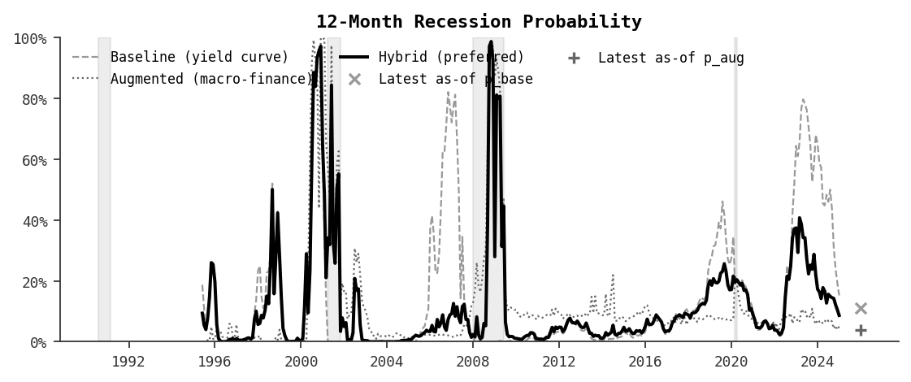

Recession Probability How risk evolves over time
Why it matters: This chart is the main "risk thermometer." It shows the system's recession probability through time.
How to read: Higher values mean the model sees conditions that historically preceded recessions. Shaded bands mark past recessions. A rising line means risk is increasing; a falling line means risk is easing.
Important: A high probability does not mean a recession is guaranteed, and a low probability does not mean one is impossible. This is a monitoring signal based on history, not a calendar prediction.
Latest update
As of 2026-01-01
6.4%
Elevated risk
12-month recession probability
Yield-curve model
11.0%
Macro-finance model
3.8%
Reliability weight (w)
0.64
Blending both models
Sensitivity (w ± 0.1):
7.1% → 5.6%
